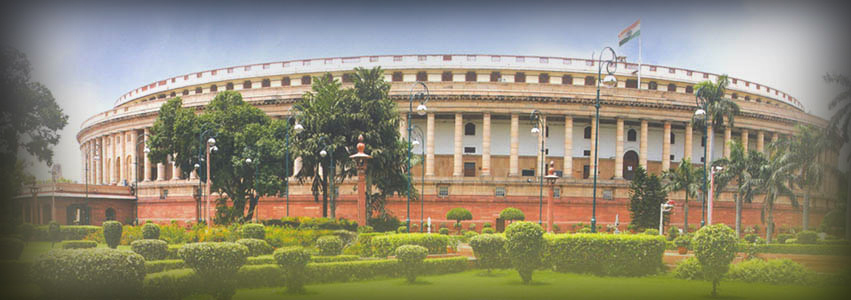
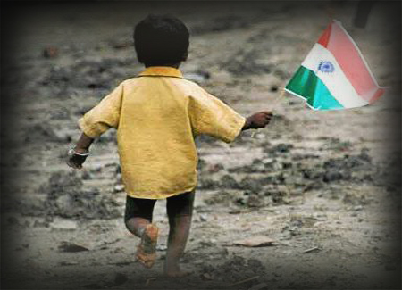
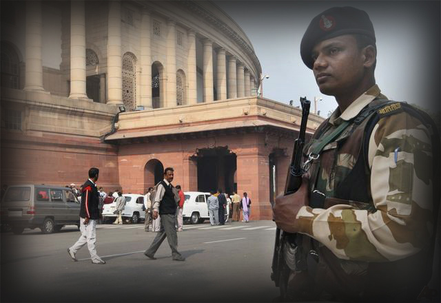

-

Analysis of the 15th Lok Sabha
- 
-

-
Inequality?
The percentage of women MPs in the lower house of the parliament is only 10%
-
-
QUICK STATS
1. The average age of a member of the Lok Sabha is 56 years.
2. Out of 60 female MPs, 22 are post graduates (36 %), 22 are graduates (36 %) and only 2 are under matric (3%).
3. The largest number of women MPs is 23 from the Congress Party (INC), while BJP has 13 women MPs.
4. Out of 491 male MPs, 125 are post graduates (25%), 234 are graduates (47%) and 17 are under matric (3%).
5. In the 1st Lok Sabha, there was no MP over the age of 70. This number has risen to 7 per cent in the current Lok Sabha.
6. The number of MPs below 40 has decreased from 26 per cent in 1952 to 14 per cent in the current Lok Sabha.
7. Women MPs are younger than their male counterparts. At the beginning of the 15th Lok Sabha, the average age of women MPs was 47 while the average age of male MPs was 54 years. There were no women MPs over 70 years of age.
8. Of the larger states in Lok Sabha, Madhya Pradesh has the highest percentage of women MPs (21 per cent), followed by Uttar Pradesh (15 per cent) and Gujarat (15 per cent).
9. Though the percentage of women MPs has increased over the years, it is still lower in comparison to some countries. These include Sweden (45 per cent), Argentina (37 per cent), UK (22 per cent), and USA (17 per cent).
10. In the 1950s, Lok Sabha met for an average of 127 days a year; in 2011, it met for 73 days. - 
-
Shift of Focus ?
A total of 639 questions were asked related to India as a whole. 36 questions related to International issues were asked